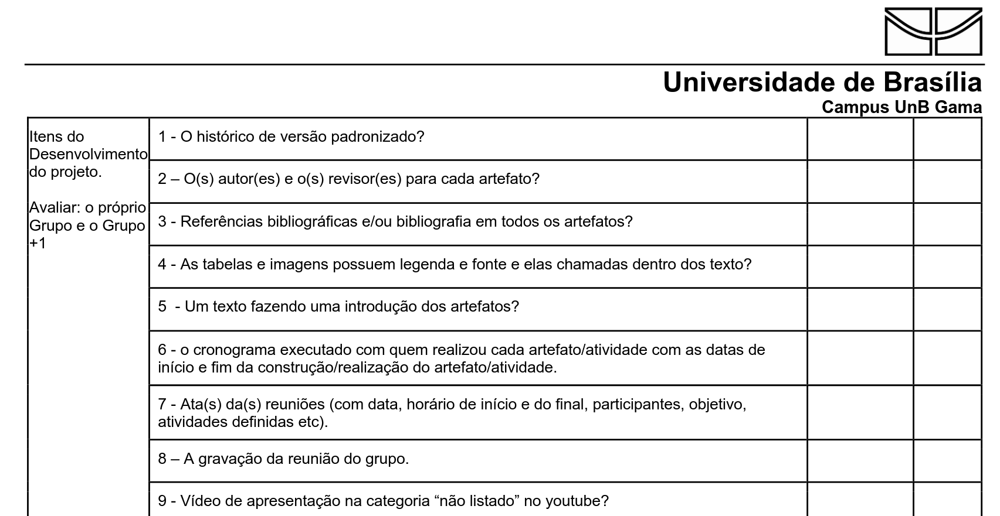
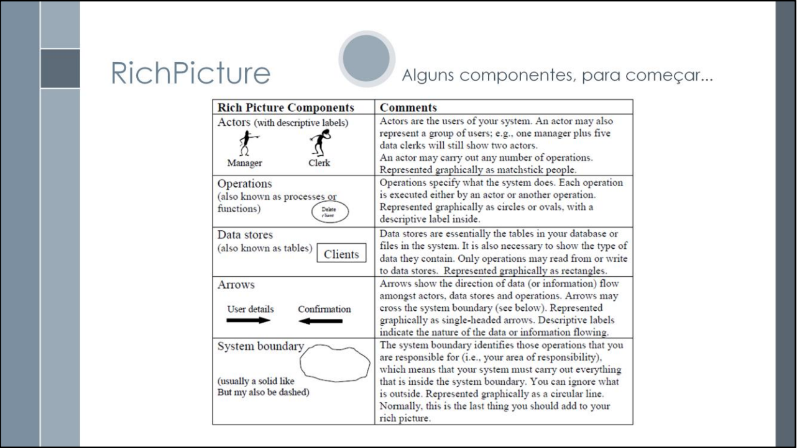
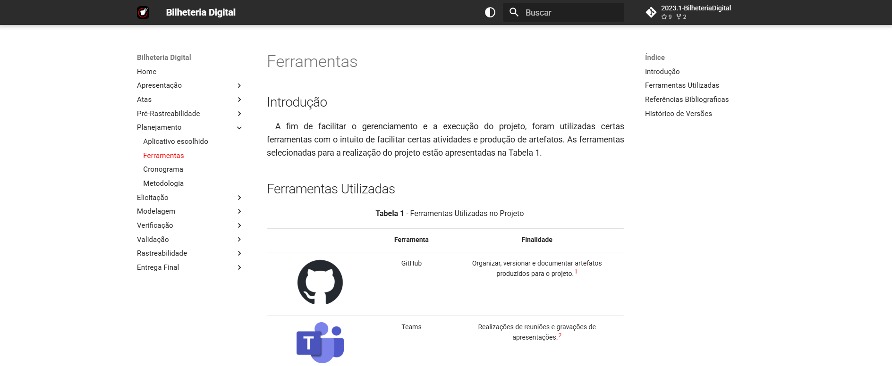
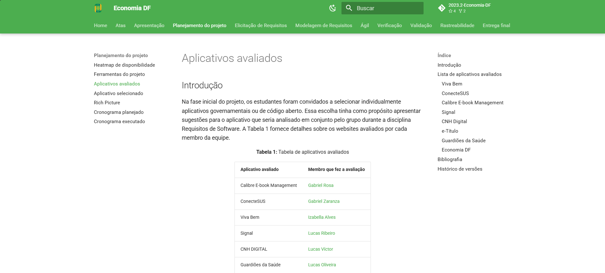
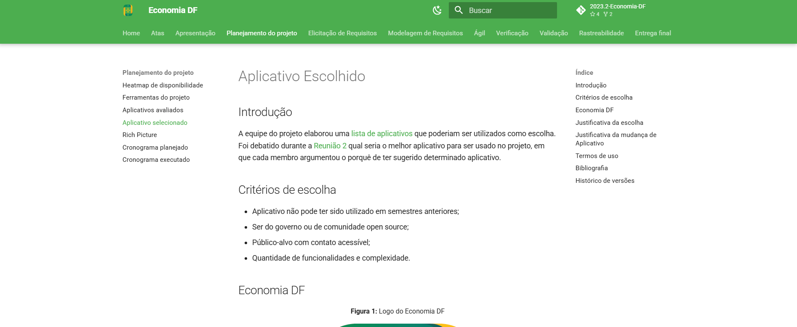
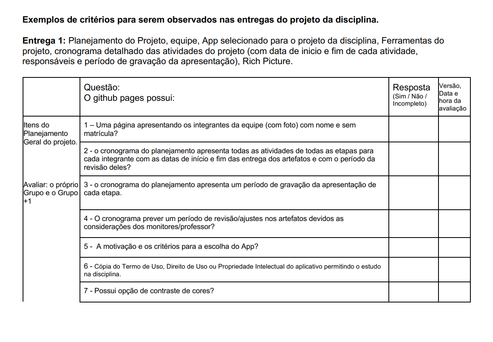
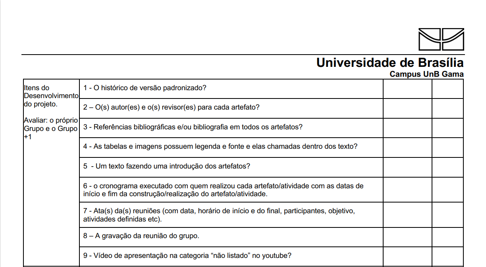

Planejamento da Verificação da Etapa 1 (Planejamento do Projeto) do Grupo 6 (2024.2) - Meu INSS
Introdução
Verificação e validação são processos fundamentais no desenvolvimento de software. A verificação garante que o software está sendo construído corretamente, de acordo com as especificações, enquanto a validação assegura que ele atende às necessidades do usuário final. Ambos são essenciais para garantir a qualidade e confiabilidade do produto [1]. No presente artefato buscou-se mostrar, de forma clara, como foi organizado a verificação dos artefatos produzidos na etapa 1 (Planejamento do Projeto) para o aplicativo Meu INSS na disciplina de requisitos de software.
Objetivos
O objetivo desse documento é mostrar de forma direta e clara como se deu a organização da verificação dos artefatos produzidos na etapa 1 do projeto, ou seja, aqui será descrito qual metodologia foi utilizada para realizar a verificação assim como quais critérios foram estabelecidos para cada um dos artefatos. Através disso é possível assegurar que todos os artefatos feitos estão em conformidade com o que foi estudado em sala de aula como também com o que diz a literatura estudada na disciplina.
Metodologia
A metodologia que foi escolhida para ser executada a verificação dos artefatos é a proposta por Michael E. Fagan [2], o qual defende uma abordagem de revisão dos artefatos do software. O objetivo é a identificação e corrição de possíveis problemas encontrados durante a análise. A inspeção de Fagan é claramente estruturada.
O objetivo dessa inspeção está em:
- Preparação: estudo e compreensão dos artefatos que serão avaliados;
- Inspeção Individual: elaboração e utilização de uma lista de verificação para os artefatos;
- Correção e Reinspeção: ajustes em quaisquer anormalidades encontradas;
- Revisão da Inspeção: análise dos resultados obtidos a partir da verificação, a ser realizada por algum membro do grupo que não seja o responsável pela inspeção inicial.
A inspeção será registrada e também disponibilizada na página de cada artefato mencionado no presente documento.
Participantes
O integrante que ficou responsável por executar a verificação da Etapa 1 foi Cristiano Morais.Realizou-se uma verificação através das listas de inspeção e verificação dos artefatos que foram criados e desenvolvidos na Entrega 1 do projeto.
Artefatos para Verificação
Na tabela 1 é possível observar quais os artefatos assim como suas versões que serão verificadas.
Tabela 1 - Tabela de artefatos produzidos na Entrega 3
| Artefato | Versão | Data | Autor |
|---|---|---|---|
| RichPicture | 1.0 | 28/10/2024 | Cristiano Morais |
| Aplicativo Selecionado | 1.0 | 28/10/2024 | Cristiano Morais |
| Aplicativos Avaliados | 2.0 | 22/11/2024 | Cristiano Morais Julia Fortunato Ana Catarina Maurício Ferreira Nicolas Bomfim |
| Ferramentas | 1.0 | 02/11/2024 | Ana Catarina |
| Cronograma Planejado | 2.0 | 22/11/2024 | Ana Catarina e Julia Fortunato |
| Cronograma Executado | 5.0 | 17/12/2024 | Ana Catarina, Julia Fortunato e Nicolas Bomfim |
| Heatmap | 2.0 | 22/11/2024 | Ana Catarina e Nicolas Bomfim |
Autor: Cristiano Morais, 2025
Listas de verificação
Neste momento, serão apresentadas as listas de verificação produzidas paras os artefatos referentes a entrega 1 (Planejamento do Projeto), haverá uma lista de verificação comum a todos os artefatos do que diz respeito a sua estrutura e uma outra checklist específica para cada artefato da referente entrega. As questões disponibilizadas em cada um dos checklist devem ser respondidas com "Sim", "Não", "Incompleto" ou "Não se aplica", isso mostra o estado em que o critério avaliado se encontra no artefato. Os itens devem possuir referência, e uma foto dela sempre que possível.
Caso eventualmente existam observações para serem feitas, elas serão colocadas ao final da tabela no qual se refere.
Lista de verificação padrão para os Artefatos do Projeto
Na Tabela 2, estão listados os critérios referentes a estrutura dos artefatos que devem ser verificados em todos os artefatos da entrega 1.
Tabela 2 - Lista de verificação para itens de padronização e desenvolvimento do projeto
| ID | Descrição | Fonte | Foto |
|---|---|---|---|
| 1 | O artefato possui histórico de versão padronizado? | SALES, André. Plano de Ensino de Requisitos de Software (UnB) 2024.2. 2024. Disponível em: Plano de Ensino - REQ (2024.2). Acesso em: 01 de fevereiro de 2025. |  |
| 2 | O(s) autor(es) e o(s) revisor(es) estão presentes para cada artefato? | SALES, André. Plano de Ensino de Requisitos de Software (UnB) 2024.2. 2024. Disponível em: Plano de Ensino - REQ (2024.2). Acesso em: 01 de fevereiro de 2025. | |
| 3 | O artefato possui bibliografia e/ou referência bibliográfica? | SALES, André. Plano de Ensino de Requisitos de Software (UnB) 2024.2. 2024. Disponível em: Plano de Ensino - REQ (2024.2). Acesso em: 01 de fevereiro de 2025. | |
| 4 | As tabelas e imagens possuem legenda e fonte/autor e elas chamadas dentro dos texto? | SALES, André. Plano de Ensino de Requisitos de Software (UnB) 2024.2. 2024. Disponível em: Plano de Ensino - REQ (2024.2). Acesso em: 01 de fevereiro de 2025. | |
| 5 | O artefato possui um texto fazendo introdução dele? | SALES, André. Plano de Ensino de Requisitos de Software (UnB) 2024.2. 2024. Disponível em: Plano de Ensino - REQ (2024.2). Acesso em: 01 de fevereiro de 2025. |
Autor:Júlia Fortunato, 2025
Lista de Verificação RichPicture
Na tabela 3 é possível observar quais são os critérios necessários para o artefato RichPicture do grupo 6.
Tabela 3 - Lista de verificação para o Richpicture
| ID | Descrição | Fonte | Foto |
|---|---|---|---|
| 1 | O richpicture possui atores com label descritiva? | SERRANO, Milene; SERRANO, Maurício. Requisitos Pré-Rastreabilidade - Aula 4. s.d. Disponível em: Aprender 3 UnB. Acesso em: 03 de fevereiro de 2025. |  |
| 2 | O richpicture possui fronteira? | SERRANO, Milene; SERRANO, Maurício. Requisitos Pré-Rastreabilidade - Aula 4. s.d. Disponível em: Aprender 3 UnB. Acesso em: 03 de fevereiro de 2025. | |
| 3 | As operações estão simbolizadas em balões? | SERRANO, Milene; SERRANO, Maurício. Requisitos Pré-Rastreabilidade - Aula 4. s.d. Disponível em: Aprender 3 UnB. Acesso em: 03 de fevereiro de 2025. | |
| 4 | As operações estão interligadas por flechas? | SERRANO, Milene; SERRANO, Maurício. Requisitos Pré-Rastreabilidade - Aula 4. s.d. Disponível em: Aprender 3 UnB. Acesso em: 03 de fevereiro de 2025. | |
| 5 | Todos os elementos do richpicture estão coesos entro si? | SERRANO, Milene; SERRANO, Maurício. Requisitos Pré-Rastreabilidade - Aula 4. s.d. Disponível em: Aprender 3 UnB. Acesso em: 03 de fevereiro de 2025. |
Autor: Cristiano Morais , 2025
Lista de Verificação Heatmap
Na tabela 3 é possível observar quais são os critérios necessários para o artefato Heatmap do grupo 6.
Tabela 3 - Lista de verificação para o Heatmap
| ID | Descrição | Fonte | Foto |
|---|---|---|---|
| 1 | O heatmap abrange todos os horários possíveis? | TUFTE, Edward R. The Visual Display of Quantitative Information. 2. ed. Cheshire, CT: Graphics Press, 2001. | Não Possui |
| 2 | Os horários de maior disponibilidade estão destacados de alguma forma (como uma cor ou número)? | TUFTE, Edward R. The Visual Display of Quantitative Information. 2. ed. Cheshire, CT: Graphics Press, 2001. | Não Possui |
| 3 | Os horários de menor disponibilidade estão destacados de alguma forma (como uma cor ou número)? | TUFTE, Edward R. The Visual Display of Quantitative Information. 2. ed. Cheshire, CT: Graphics Press, 2001. | Não Possui |
| 4 | O heatmap leva em conta o horário de todos os membros do grupo? | TUFTE, Edward R. The Visual Display of Quantitative Information. 2. ed. Cheshire, CT: Graphics Press, 2001. | Não Possui |
| 5 | Possui os horários escolhidos pelo grupo para se reunir? | TUFTE, Edward R. The Visual Display of Quantitative Information. 2. ed. Cheshire, CT: Graphics Press, 2001. | Não Possui |
Autor: Cristiano Morais , 2025
Lista de Verificação Ferramentas do projeto
Na tabela 4 é possível observar quais são os critérios necessários para o artefato Ferramentas do Projeto do grupo 6.
Tabela 4 - Lista de verificação para as Ferramentas
| ID | Descrição | Fonte | Foto |
|---|---|---|---|
| 1 | O artefato abrange todas as ferramentas utilizadas no projeto? | MELO, Arthur de; HENRIQUE, Matheus. Ferramentas - Bilheteria Digital. Disponível em: https://www.bilheteriadigital.com/ferramentas. Acesso em: 3 de fev. 2025 |  |
| 2 | As ferramentas estão identificadas com nome e/ou logo? | MELO, Arthur de; HENRIQUE, Matheus. Ferramentas - Bilheteria Digital. Disponível em: https://www.bilheteriadigital.com/ferramentas. Acesso em: 3 de fev. 2025 | |
| 3 | Existe uma breve explicação da finalidade do uso de cada ferramenta? | MELO, Arthur de; HENRIQUE, Matheus. Ferramentas - Bilheteria Digital. Disponível em: https://www.bilheteriadigital.com/ferramentas. Acesso em: 3 de fev. 2025 |
Autor: Cristiano Morais , 2025
Lista de Verificação Aplicativos Avaliados
Na tabela 5 é possível observar quais são os critérios necessários para o artefato Aplicativos Avaliados do grupo 6.
Tabela 5 - Lista de verificação para os Aplicativos Avaliados
| ID | Descrição | Fonte | Foto |
|---|---|---|---|
| 1 | O artefato possui os aplicativos avaliados pelos membros do grupo? | ROSA, Gabriel. Aplicativos Avaliados - EconomiaDF. Disponível em: https://requisitos-de-software.github.io/2023.2-Economia-DF/planejamento%20do%20projeto/lista-apps-avaliados/ . Acesso em: 3 de fev. 2025 |  |
| 2 | Possui uma breve explicação sobre os aplicativos? | ROSA, Gabriel. Aplicativos Avaliados - EconomiaDF. Disponível em: https://requisitos-de-software.github.io/2023.2-Economia-DF/planejamento%20do%20projeto/lista-apps-avaliados/ . Acesso em: 3 de fev. 2025 | |
| 3 | Possui alguma explicação sobre os pontos que levaram cada aplicativo a ser uma potencial escolha para o projeto? | ROSA, Gabriel. Aplicativos Avaliados - EconomiaDF. Disponível em: https://requisitos-de-software.github.io/2023.2-Economia-DF/planejamento%20do%20projeto/lista-apps-avaliados/ . Acesso em: 3 de fev. 2025 |
Autor: Cristiano Morais , 2025
Lista de Verificação Aplicativo Selecionado
Na tabela 6 é possível observar quais são os critérios necessários para o artefato Aplicativo Selecionado do grupo 6.
Tabela 6 - Lista de verificação para o Aplicativo Selecionado
| ID | Descrição | Fonte | Foto |
|---|---|---|---|
| 1 | O artefato possui indicação do aplicativo que foi selecionado para o projeto? | ROSA, Gabriel. Aplicativo Selecionado - EconomiaDF. Disponível em: https://requisitos-de-software.github.io/2023.2-Economia-DF/planejamento%20do%20projeto/app-selecionado/ . Acesso em: 3 de fev. 2025 |  |
| 2 | O artefato possui alguma explicação do por que foi escolhido o aplicativo? | ROSA, Gabriel. Aplicativo Selecionado - EconomiaDF. Disponível em: https://requisitos-de-software.github.io/2023.2-Economia-DF/planejamento%20do%20projeto/app-selecionado/ . Acesso em: 3 de fev. 2025 | |
| 3 | Possui indicação dos termos de uso? | ROSA, Gabriel. Aplicativo Selecionado - EconomiaDF. Disponível em: https://requisitos-de-software.github.io/2023.2-Economia-DF/planejamento%20do%20projeto/app-selecionado/ . Acesso em: 3 de fev. 2025 |
Autor: Cristiano Morais , 2025
Lista de Verificação Cronograma Planejado
Na tabela 7 é possível observar quais são os critérios necessários para o artefato Cronograma Planejado do grupo 6.
Tabela 7 - Lista de verificação para o Cronograma Planejado
| ID | Descrição | Fonte | Foto |
|---|---|---|---|
| 1 | O cronograma de planejamento preve datas para as gravações do que foi produzido em cada uma das etapas? | SALES, André. Plano de Ensino de Requisitos de Software (UnB) 2024.2. 2024. Disponível em: Plano de Ensino - REQ (2024.2). Acesso em: 01 de fevereiro de 2025. |  |
| 2 | O cronograma de planejamento tem todas as atividades que devem ser desenvolvidas para o projeto com autores para cada uma delas? | SALES, André. Plano de Ensino de Requisitos de Software (UnB) 2024.2. 2024. Disponível em: Plano de Ensino - REQ (2024.2). Acesso em: 01 de fevereiro de 2025. | |
| 3 | Possui data para início assim como para o final do desenvolvimento de cada artefato/atividade? | SALES, André. Plano de Ensino de Requisitos de Software (UnB) 2024.2. 2024. Disponível em: Plano de Ensino - REQ (2024.2). Acesso em: 01 de fevereiro de 2025. | |
| 4 | O cronograma possui período de revisão para os artefatos? | SALES, André. Plano de Ensino de Requisitos de Software (UnB) 2024.2. 2024. Disponível em: Plano de Ensino - REQ (2024.2). Acesso em: 01 de fevereiro de 2025. |
Autor: Cristiano Morais , 2025
Lista de Verificação Cronograma Executado
Na tabela 8 é possível observar quais são os critérios necessários para o artefato Cronograma Executado do grupo 6.
Tabela 8 - Lista de verificação para o Cronograma Executado
| ID | Descrição | Fonte | Foto |
|---|---|---|---|
| 1 | O cronograma executado possui as datas das gravações de cada entrega? | SALES, André. Plano de Ensino de Requisitos de Software (UnB) 2024.2. 2024. Disponível em: Plano de Ensino - REQ (2024.2). Acesso em: 01 de fevereiro de 2025. |  |
| 2 | O cronograma executado tem todas as atividades que foram desenvolvidas para o projeto com autores para cada uma delas? | SALES, André. Plano de Ensino de Requisitos de Software (UnB) 2024.2. 2024. Disponível em: Plano de Ensino - REQ (2024.2). Acesso em: 01 de fevereiro de 2025. | |
| 3 | Possui data de início assim como data de fim do desenvolvimento de cada artefato/atividade? | SALES, André. Plano de Ensino de Requisitos de Software (UnB) 2024.2. 2024. Disponível em: Plano de Ensino - REQ (2024.2). Acesso em: 01 de fevereiro de 2025. | |
| 4 | O cronograma possui período de revisão dos artefatos? | SALES, André. Plano de Ensino de Requisitos de Software (UnB) 2024.2. 2024. Disponível em: Plano de Ensino - REQ (2024.2). Acesso em: 01 de fevereiro de 2025. |
Autor: Cristiano Morais , 2025
Referências
[1] SERRANO, Milene; SERRANO, Maurício. Requisitos - Aula 23. s.d. Slide 1-52. Disponível em: https://aprender3.unb.br/pluginfile.php/2972537/mod_resource/content/2/Requisitos%20-%20Aula%20023.pdf. Acesso em: 02 de fevereiro de 2025. [2] FAGAN, Michael E. Design and Code Inspections to Reduce Errors in Program Development. 1976.
Bibliografia
SALES, André. Plano de Ensino de Requisitos de Software (UnB) 2024.2. 2024. Disponível em:Plano de Ensino - REQ (2024.2) SERRANO, Milene; SERRANO, Maurício. Requisitos Pré-Rastreabilidade - Aula 4. s.d. Disponível em: Aprender 3 UnB TUFTE, Edward R. The Visual Display of Quantitative Information. 2. ed. Cheshire, CT: Graphics Press, 2001. MELO, Arthur de; HENRIQUE, Matheus. Ferramentas - Bilheteria Digital. Disponível em: https://www.bilheteriadigital.com/ferramentas. Acesso em: 3 de fev. 2025 ROSA, Gabriel. Aplicativos Avaliados - EconomiaDF. Disponível em: https://requisitos-de-software.github.io/2023.2-Economia-DF/planejamento%20do%20projeto/lista-apps-avaliados/ . Acesso em: 3 de fev. 2025 ROSA, Gabriel. Aplicativo Selecionado - EconomiaDF. Disponível em: https://requisitos-de-software.github.io/2023.2-Economia-DF/planejamento%20do%20projeto/app-selecionado/ . Acesso em: 3 de fev. 2025
Histórico de versões
| Versão | Data | Descrição | Autor | Revisor |
|---|---|---|---|---|
1.0 |
02/02/2025 | Criação do documento | Cristiano Morais | Nicolas Bomfim |